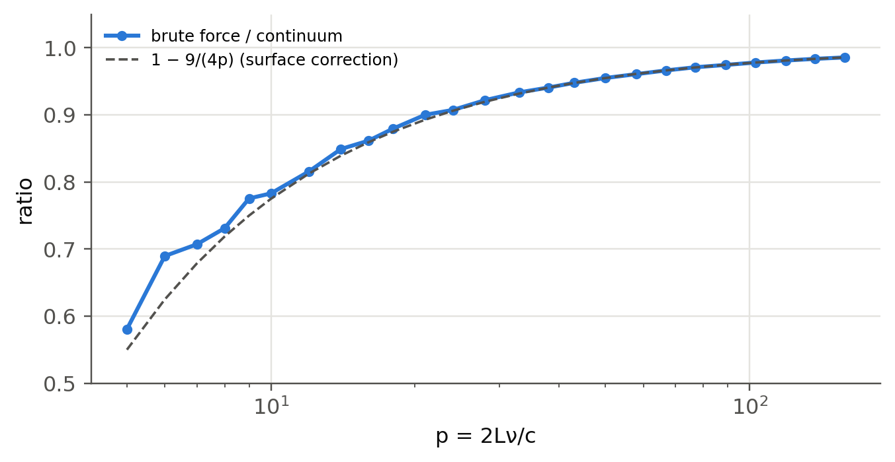
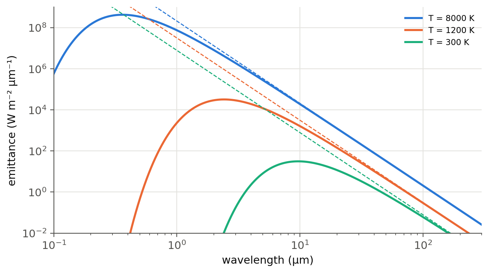

1 Radiation in a box
 Run this chapter’s code in Google Colab (no installation).
Run this chapter’s code in Google Colab (no installation).
Slides 4–7: radiation in a box at temperature \(T\), counting the modes, the density of modes, the “ultraviolet catastrophe” and Planck’s law.
1.1 Key relations
A cubic box of side \(L\) with conducting walls holds standing waves whose wavevector components are quantised (slide 4),
\[ k_x=\frac{\pi n_x}{L},\quad k_y=\frac{\pi n_y}{L},\quad k_z=\frac{\pi n_z}{L},\qquad n_x,n_y,n_z=1,2,3,\dots \]
Each triplet \((n_x,n_y,n_z)\) is a point of a cubic lattice in “mode space” (slide 5). A mode of frequency \(\nu\) sits at the distance \(p=\sqrt{n_x^2+n_y^2+n_z^2}=2L\nu/c\) from the origin. Counting the points in the positive octant of a spherical shell of radius \(p\) and thickness \(dp\), and multiplying by 2 for the two polarisations, gives the number of modes per unit volume per unit frequency (slides 6–7):
\[ \frac{dN}{L^3\,d\nu}=\frac{1}{L^3}\cdot2\cdot\frac{1}{8}\cdot4\pi p^2\frac{dp}{d\nu}=\frac{8\pi\nu^2}{c^3}. \]
Classical physics gives every mode the mean energy \(k_BT\). The energy density per unit frequency is then the Rayleigh–Jeans law, \(\rho(\nu)=8\pi k_BT\nu^2/c^3\), which grows without bound at high frequency: the “disaster at high frequency” of slide 7. Planck replaced \(k_BT\) by the mean energy of a quantised oscillator, \(h\nu/(e^{h\nu/k_BT}-1)\), which falls off exponentially when \(h\nu\gg k_BT\):
\[ \rho_\text{eq}(\nu)=\frac{8\pi h\nu^3}{c^3}\,\frac{1}{\exp(h\nu/k_BT)-1}. \]
The Planck law reappears in Chapter 2: Einstein used it to find the ratio of spontaneous to stimulated emission.
WarningTwo details of slides 6–7
Slide 6 writes \(dN=4\pi\nu\,(L/c)^3d\nu\). The exponent is missing: the octant of the shell gives \(dN=4\pi\nu^2(L/c)^3d\nu\) for one polarisation. Slides 6–7 then carry \(4\pi\) into \(du_\nu/d\nu=4\pi k_BT\nu^2/c^3\), whereas Planck’s law on the same slide has \(8\pi\). The factor 2 is the second polarisation. With it, Planck’s law tends exactly to Rayleigh–Jeans when \(h\nu\ll k_BT\).
1.2 Counting the modes (slides 5–6)
The panel draws a two-dimensional slice of mode space (\(n_z=1\)) and the shell between \(p\) and \(p+dp\). The table counts the modes of the full 3D box by brute force and compares with the continuum formula \(\tfrac{\pi}{6}p^3\) (one polarisation).
For small \(p\) the brute-force count falls below the continuum value. The points on the three planes \(n_i=0\) are not modes (the field vanishes), and the sphere “loses” a surface layer. The relative error falls as \(1/p\). For visible light in a 1 cm box, \(p=2L\nu/c\approx4\times10^4\), so the continuum formula is exact for all practical purposes.
Show the Python
p = np.unique(np.round(np.logspace(0.7, 2.2, 25)))
ratio = [lz.count_modes_box(1.0, P*lz.c0/2)/(np.pi/6*P**3) for P in p]
fig, ax = plt.subplots(figsize=(7, 3.3))
ax.semilogx(p, ratio, "o-", ms=4, label="brute force / continuum")
ax.semilogx(p, 1 - 9/(4*p), "--", color=lz.INK2, lw=1.2, label="1 − 9/(4p) (surface correction)")
ax.set(xlabel="p = 2Lν/c", ylabel="ratio", ylim=(0.5, 1.05)); ax.legend(fontsize=8); plt.show()
1.3 The density of modes and the ultraviolet catastrophe (slide 7)
Show the Python
wl = np.logspace(-7, np.log10(3e-4), 600)
fig, ax = plt.subplots(figsize=(7.5, 4))
for T, c in zip((8000, 1200, 300), lz.PALETTE):
ax.loglog(wl*1e6, lz.planck_emittance(wl, T)*1e-6, color=c, label=f"T = {T} K")
ax.loglog(wl*1e6, 2*np.pi*lz.c0*lz.kB*T/wl**4*1e-6, "--", color=c, lw=1)
ax.set(xlabel="wavelength (µm)", ylabel="emittance (W m⁻² µm⁻¹)", ylim=(1e-2, 1e9), xlim=(0.1, 300)); ax.legend(fontsize=8); plt.show()
1.4 How many photons per mode?
The factor \(1/(e^{h\nu/k_BT}-1)\) is the mean number of photons in one mode at temperature \(T\). It is the quantity that decides whether stimulated or spontaneous emission dominates (Chapter 2):
Show the Python
rows = []
for name, wl in (("microwave, 10 GHz", lz.c0/10e9), ("CO₂ laser, 10.6 µm", 10.6e-6), ("telecom, 1.55 µm", 1.55e-6),
("He–Ne, 632.8 nm", 632.8e-9), ("UV, 250 nm", 250e-9)):
nu = lz.c0/wl
rows.append({"radiation": name, "hν (eV)": f"{lz.h*nu/lz.qe:.3g}",
**{f"n̄ at {T} K": f"{lz.stim_over_spont(nu, T):.2e}" for T in (300, 3000, 6000)}})
pd.DataFrame(rows)| radiation | hν (eV) | n̄ at 300 K | n̄ at 3000 K | n̄ at 6000 K | |
|---|---|---|---|---|---|
| 0 | microwave, 10 GHz | 4.14e-05 | 6.25e+02 | 6.25e+03 | 1.25e+04 |
| 1 | CO₂ laser, 10.6 µm | 0.117 | 1.10e-02 | 1.75e+00 | 3.94e+00 |
| 2 | telecom, 1.55 µm | 0.8 | 3.65e-14 | 4.75e-02 | 2.70e-01 |
| 3 | He–Ne, 632.8 nm | 1.96 | 1.22e-33 | 5.11e-04 | 2.31e-02 |
| 4 | UV, 250 nm | 4.96 | 4.86e-84 | 4.66e-09 | 6.83e-05 |
At optical frequencies and room temperature a mode holds about \(10^{-11}\) to \(10^{-30}\) photons: thermal light is almost entirely spontaneous emission. A laser beam puts \(10^{10}\) or more photons into a single mode. It cannot be thermal light.
TipGoing further
- Density of modes in a medium. In a medium of index \(n\), \(k=2\pi n\nu/c\) and the mode density becomes \(8\pi n^3\nu^2/c^3\) (or \(8\pi n^2n_g\nu^2/c^3\) with dispersion). This \(n^3\) enters \(A_{21}/B_{21}\) and the threshold of semiconductor lasers (Chapter 6).
- Spontaneous emission is not a constant of the atom. Fermi’s golden rule makes \(A_{21}\) proportional to the density of modes at \(\nu_{21}\). In a cavity of volume \(V\) and quality factor \(Q\) the rate is multiplied by the Purcell factor \(F_P=\frac{3}{4\pi^2}\left(\frac{\lambda}{n}\right)^3\frac{Q}{V}\). Compute \(F_P\) for a micropillar with \(Q=10^4\) and \(V=5(\lambda/n)^3\). This is how single-photon sources and nanolasers work.
- Stefan–Boltzmann and Wien from Planck. Integrate \(M_\lambda\) numerically (
scipy.integrate.quad) to recover \(\sigma T^4\), and differentiate to recover \(\lambda_\text{max}T=2898\) µm K. Where is the maximum when plotted versus frequency instead? Why is it different? - Cosmic microwave background. Fit the Planck law to the FIRAS data (2.725 K) and compare the mode occupation with that of a radio receiver.
NoteComplements
- Kasap, Optoelectronics and Photonics, sec. 4.2; Saleh and Teich, Fundamentals of Photonics, ch. 13 (photons in thermal equilibrium).
- Milonni and Eberly, Laser Physics (Wiley, 2010), ch. 3: the Einstein argument and the mode density.
1.5 Try it yourself
- How many modes (both polarisations) lie between 632.7 and 632.9 nm in a 1 cm³ box?
- Show that Planck’s law reduces to Rayleigh–Jeans when \(h\nu\ll k_BT\) and to Wien’s law \(\propto\nu^3e^{-h\nu/k_BT}\) when \(h\nu\gg k_BT\).
- At what temperature does a 1.55 µm mode hold one photon on average? Is that temperature reachable?
- Repeat the mode count for a 2D box (a planar microcavity). How does the density of modes depend on \(\nu\)?